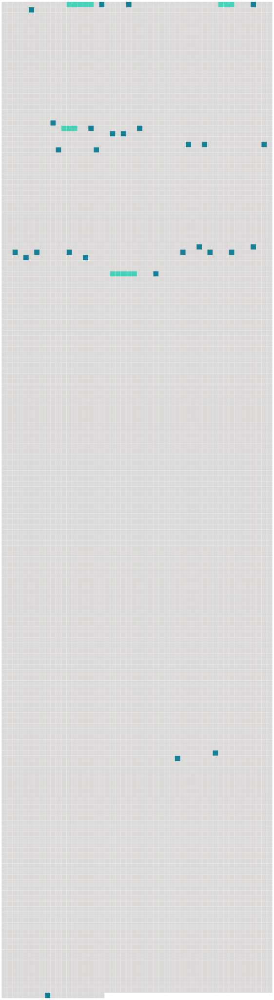

Longueur nb maillons : 32 mentions |
|
Mais, privilège bien rare, rien ne manqua au bonheur de [M. et Mme Seton]
[Leur] sympathie était complète, [leur] tendresse mutuelle, extrême ; tout ce que le monde estime, recherche, admire, [les jeunes époux] le possédaient.
[Leur] mariage avait en outre comblé les vœux de [leurs] parents, et rendu encore plus agréables et plus sûrs les rapports qui existaient, depuis longtemps entre les deux familles. [39 phrases] La courageuse femme écrivait à sa belle-sœur Rebecca : « Je voudrais pouvoir vous écrire une longue lettre, sans vous dire un seul mot de [nos] affaires. [3 phrases]
» « [Notre] bien-aimé père, écrivait Élisabeth, avait élevé [ses] enfants dans les sentiments d'une telle harmonie, d'une telle affection, tous y annoncent ou y possèdent de si bonnes et si aimables dispositions, que si William peut seulement arriver ce qu'il leur reste un peu de bien-être, [nous] conserverons [nos] espérances de bonheur. [7 phrases] Dieu est là-haut, tout, tournera à [notre] bien …… [Nous] ne devons pas nous attendre à avoir ici-bas ce qui [nous] plairait davantage. [1 phrases] car si [nous] l'avions, avec quelle facilité [nous] perdrions de vue l'autre vie, seul séjour d'une paix sans fin. [44 phrases] Ils disent tous que c'est témérité, que c'est presque folie à [nous] d'entreprendre ce voyage, mais vous savez que [nous] ne raisonnons pas ainsi. [Nous] allons partir. [Nous] nous appuyons sur Dieu, [notre] unique force. Mon âme est remplie de reconnaissance envers lui ; car assurément, avec tant de sujets que [nous] avons de renoncer toutes [nos] espérances ici-bas, [nous] irons chercher naturellement, sans le moindre effort, là-haut, [notre] repos. [1 phrases] se peut -il bien que [nous] soyons là réunis un jour, sans crainte d'être séparés jamais!! [3 phrases]
» [182 phrases] C'est aujourd'hui l'anniversaire de la naissance de [notre] cher petit William ; je l'ai rappelé à mon mari ; j'ai mal fait, car il en a été ému jusqu'aux larmes. [1 phrases] il est si faible, qu'il pleure à la seule pensée de [notre] foyer. [98 phrases] Mon William me regardait dans une agonie muette ; et, moi, de même, je le regardais, chacun de [nous] ayant peur d'affaiblir le courage de l'autre. |
 |
Il est possible de télécharger la ressource sur la page Ortolang |
Si vous avez des questions ou vous voyez des erreurs, merci d'envoyer un mail à silvia.federzoni89@gmail.com |